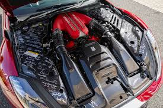
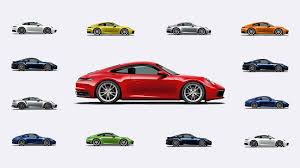

Technology

Ferrari is known for its heavy investment in Formula 1-derived technology, which it translates directly into its road cars. This includes advanced aerodynamics, lightweight materials, and high-performance engines. Ferrari’s focus is on creating a thrilling driving experience with cutting-edge features like active aerodynamics and sophisticated traction control systems1. Porsche excels in integrating advanced technology with everyday usability. The brand is a leader in developing all-wheel-drive systems, active suspension technologies, and driver assistance features. Porsche’s vehicles often include turbocharged engines and hybrid systems, offering a balance between high performance and efficiency. Their cars are designed to deliver exceptional performance without compromising on comfort or practicality12. Lamborghini focuses on extreme performance and bold design. The brand incorporates advanced materials like carbon fiber and uses powerful V10 and V12 engines. Lamborghini also employs innovative technologies such as all-wheel drive and active aerodynamics to enhance performance. However, some of Lamborghini’s technology is shared with other brands under the Volkswagen Group, which can sometimes detract from its uniqueness
Performance

Ferrari is renowned for its high-revving, naturally aspirated engines and a strong focus on aerodynamics derived from its Formula 1 experience. This results in cars that offer exhilarating acceleration and top speeds, with models like the Ferrari 488 Pista and SF90 Stradale showcasing incredible power and agility1. Porsche is celebrated for its precision engineering and balance. The Porsche 911 Turbo S, for example, is known for its exceptional handling, thanks to its advanced all-wheel-drive system and rear-engine layout. Porsche’s use of turbocharged engines and hybrid technology also ensures that their cars deliver impressive performance while maintaining everyday usability12. Lamborghini emphasizes raw power and dramatic design. With models like the Aventador and Huracán, Lamborghini focuses on delivering an adrenaline-pumping driving experience. Their cars often feature powerful V10 and V12 engines, coupled with all-wheel drive, providing incredible acceleration and top speeds. Lamborghini’s aggressive styling and roaring engines make them a favorite for those seeking an extreme performance experience23.
Perferences

If you prioritize heritage and a race-inspired driving experience, Ferrari might be the best choice for you. Their cars are known for their high-revving engines and aerodynamic designs, offering a thrilling ride that reflects their Formula 1 pedigree. For those who value precision engineering and versatility, Porsche stands out. With models like the 911 Turbo S, Porsche combines exceptional handling and performance with everyday usability, making it a great option for both daily driving and spirited weekend drives. If your preference leans towards bold design and raw power, Lamborghini could be the perfect fit. Known for their aggressive styling and powerful engines, Lamborghini cars provide an adrenaline-pumping experience that is hard to match.Their cars often feature powerful V10 and V12 engines, coupled with all-wheel drive, providing incredible acceleration and top speeds. Lamborghini’s aggressive styling and roaring engines make them a favorite for those seeking an extreme performance experience23.However, some of Lamborghini’s technology is shared with other brands under the Volkswagen Group, which can sometimes detract from its uniquenessTheir cars are designed to deliver exceptional performance without compromising on comfort or practicality12.